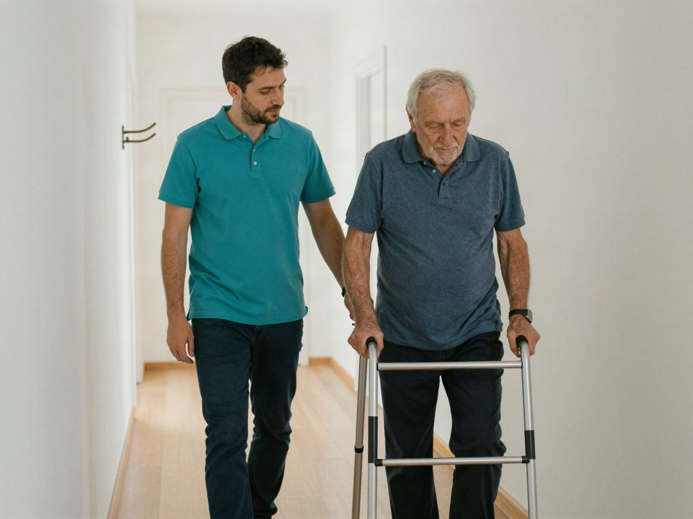

Ich suche Pflege
Für Pflegebedürftige und Angehörige. Von Hauswirtschaft bis Intensivpflege, auch ohne Pflegegrad.

100 % kostenlos und diskret
Sie sagen uns in 30 Sekunden, was gebraucht wird. Wir finden einen Pflegedienst mit freier Kapazität und rufen innerhalb von 24 Stunden zurück.
Hinter Nordpflege24 stehen über 15 Jahre Arbeit in der Pflege, in Hamburg, Schleswig-Holstein und ganz Norddeutschland.
Ein Ansprechpartner statt zwanzig Telefonate.
Die Vermittlung kostet Sie nichts, heute nicht und später nicht.
Ihre Angaben bleiben bei uns. Weitergabe nur mit Ihrem Okay.
Drei Fragen, eine Telefonnummer. Rückruf innerhalb von 24 Stunden.
Sie sprechen mit einem Menschen, der die Pflegedienste im Norden kennt.
Für Pflegebedürftige und Angehörige. Von Hauswirtschaft bis Intensivpflege, auch ohne Pflegegrad.

Für Pflegefachkräfte, Pflegehelfer und Quereinsteiger. Ohne Lebenslauf, diskret und kostenlos.
Sie müssen keine Pflegedienste abtelefonieren. Das übernehmen wir.
Drei kurze Fragen und Ihre Telefonnummer. Kein Konto, keine Unterlagen.
Am Telefon klären wir, was genau gebraucht wird und ab wann.
Wir fragen bei den Pflegediensten in Ihrer Nähe nach, wer Sie aufnehmen kann.
Wir stellen den Kontakt her. Sie entscheiden, ob es passt.
Ambulante Pflege zu Hause, von wenigen Stunden in der Woche bis zur Versorgung rund um die Uhr.
Hilfe beim Waschen, Anziehen, Essen und bei der Bewegung im Alltag.
Ärztlich verordnete Leistungen wie Medikamentengabe, Wundversorgung oder Injektionen.
Gesellschaft, Spaziergänge, Begleitung zum Arzt und Entlastung für Angehörige.
Einkaufen, Kochen, Wäsche und Reinigung der Wohnung.
Versorgung zu Hause oder in einer Wohngemeinschaft, zum Beispiel bei Beatmung.
Vertretung, wenn pflegende Angehörige krank sind oder eine Pause brauchen.
Oft übernimmt die Pflege- oder Krankenkasse einen großen Teil. Wir erklären Ihnen am Telefon, welche Leistungen es gibt und wie der Antrag auf einen Pflegegrad abläuft.
Über uns
Nordpflege24 bringt Menschen und Pflegedienste zusammen. Wir vermitteln Pflegebedürftige an Dienste mit freier Kapazität und Pflegekräfte an Arbeitgeber, die zu ihnen passen.
Wir stehen in direktem Kontakt mit vielen Pflegediensten in Hamburg, Schleswig-Holstein und ganz Norddeutschland.
Wir klären, welcher Pflegedienst wirklich Kapazität hat und wer gerade einstellt. Das erspart Ihnen viele Telefonate und Absagen.
Unser Team besteht aus Pflegefachkräften und erfahrenen Führungskräften aus dem Pflegemanagement. Wir kennen den Alltag von Patienten, Angehörigen und Pflegekräften.
Weil Sie nur einmal anfragen. Wir kennen viele Pflegedienste im Norden und fragen für Sie nach, wer freie Kapazität hat.
Ja. Die Vermittlung ist für Pflegebedürftige, Angehörige und Pflegekräfte kostenlos.
Ihre Angaben bleiben bei Nordpflege24. Wir geben sie erst an einen Pflegedienst weiter, wenn Sie am Telefon zugestimmt haben.
Wir rufen innerhalb von 24 Stunden zurück. Wie schnell die Pflege startet, hängt von Bedarf, Ort und freien Kapazitäten ab. Das klären wir im Gespräch.
Nein. Wir helfen auch, wenn noch kein Pflegegrad vorliegt, und erklären, wie der Antrag bei der Pflegekasse läuft.
In Hamburg, Schleswig-Holstein und ganz Norddeutschland. Fragen Sie einfach an, wir sagen Ihnen ehrlich, was vor Ort möglich ist.
Nein. Für den Start reichen deine Ausbildung, dein Wunschumfang und deine Telefonnummer.
Nein. Wir sprechen mit niemandem über deine Anfrage, bevor du zugestimmt hast.
Geben Sie zuerst Ihre Postleitzahl ein.